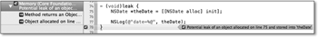
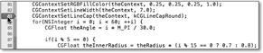
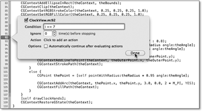
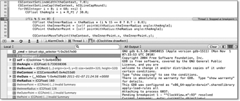
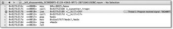
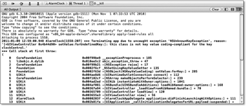

Zum Online-Shop
Zum Online-Shop
3.5 Fehlersuche
Beim Programmieren Ihrer ersten App ist wahrscheinlich der eine oder andere Fehler
aufgetreten. Dabei haben Sie schon die ersten Möglichkeiten zur Fehlersuche kennengelernt,
als Xcode Sie nach der Übersetzung auf Fehler hingewiesen hat. Außerdem hat Xcode
Ihnen vielleicht Warnungen angezeigt. Der Issue-Navigator ( + ) zeigt Ihnen alle Fehler mit roten Punkten und Warnungen mit gelben Dreiecken zu
Ihrem Code an. Sie können durch Anklicken eines Fehlers oder einer Warnung direkt
zu der entsprechenden Programmstelle gelangen.
+ ) zeigt Ihnen alle Fehler mit roten Punkten und Warnungen mit gelben Dreiecken zu
Ihrem Code an. Sie können durch Anklicken eines Fehlers oder einer Warnung direkt
zu der entsprechenden Programmstelle gelangen.
Abbildung 3.33 Der Issue-Navigator
Fehler und Warnungen unterscheiden sich darin, dass sich ein fehlerhafter Code nicht übersetzen oder gar ausführen lässt. Erhalten Sie bei der Übersetzung nur Warnungen, so wird trotzdem ein ausführbares Programm erzeugt. Allerdings enthält dieses Programm möglicherweise (abhängig von den Compiler-Einstellungen) Laufzeitfehler, die es ganz oder teilweise unbrauchbar machen. Sie sollten also Ihren Programmcode immer so formulieren, dass auch keine Warnungen bei der Übersetzung auftreten.
| Schlagen Sie die Warnungen nicht einfach in den Wind! |
|
Sie sollten die Warnungen auf keinen Fall ignorieren, sondern den Ursachen dafür auf den Grund gehen und diese beseitigen. Gerade als Anfänger werden Sie dabei viel lernen. Das leichtfertige Ignorieren von Warnungen oder das unbedachte Ändern von Code aufgrund von Warnungen kann fatale Folgen haben, wie der berühmt-berüchtigte Debian-OpenSSL-Bug[17](http://digitaloffense.net/tools/debian-openssl/) gezeigt hat. |
Wenn Sie den Menüpunkt Analyze unter Product auswählen, untersucht Xcode den Programmcode genauer. Dafür dauert aber die Übersetzung des Projekts länger. Der Analyzer kann beispielsweise einige Arten von Speicherlecks oder die Verwendung nicht initialisierter Variablen finden. Xcode verwendet blaue Symbole, um Meldungen des Analyzers darzustellen.
Abbildung 3.34 Analyzer-Meldung in Xcode
3.5.1 Logging
Eine einfache Möglichkeit der Fehlersuche ist die Verwendung des Loggings. Mit dem Logger können Sie beliebige Texte in die Konsole schreiben. Wenn Sie Ihre
App über Xcode ausführen, wird Ihnen die Konsole in einem Teil des Debuggerbereichs
angezeigt. Sie können diesen Bereich auch über das Menü View · Show Debug Area oder die Tastenkombination  + + öffnen.
+ + öffnen.
Die Ausgabe Ihrer Apps auf einem Gerät können Sie aber auch über Xcode ansehen, indem Sie den Organizer über den Menüpunkt Organizer unter Window öffnen. Dort wählen Sie das Symbol Devices und unter dem gewünschten Gerät den Punkt Console aus. Sie werden dort aber wahrscheinlich noch keine Geräte finden, da Sie noch keine registriert haben. Das wird am Ende dieses Kapitels beschrieben.
Über die Funktion NSLog können Sie eine Ausgabe ins Log schreiben. Der Aufruf dieser Funktion ist ähnlich zu der C-Funktion printf, die Sie vielleicht kennen. NSLog erlaubt Ihnen also formatierte Ausgaben – mit dem Unterschied, dass NSLog einen Objective-C-String als ersten Parameter erwartet.
| NSLog mit Format |
|
Sie sollten für den Formatparameter immer eine Zeichenkettenkonstante verwenden, da Variablen unbeabsichtigt Prozentzeichen enthalten können. Das kann zu Abstürzen führen. Schreiben Sie also lieber NSLog(@"%@", theLogText); |
Hier sind einige Beispiele für Ausgaben mit NSLog:
NSLog(@"Hallo Welt");
NSLog(@"angle=%.2f", theAngle);
NSLog(@"x=%.1f, y=%.1f", thePoint.x, thePoint.y);
NSLog(@"current time=%@", [NSDate date]);
NSLog(@"frame=%@", NSStringFromCGRect(self.frame));
Listing 3.45 Ausgaben mit »NSLog«
Sie sollten beachten, dass Objekte der Klasse NSString nicht über das Format %s, sondern über %@ ausgegeben werden. Das Format %s verwenden Sie für C-Strings, also für Zeiger auf char. Das Format %@ verwenden Sie hingegen für Objekte beliebiger Klassen. Dabei verwendet NSLog für die Ausgabe die Rückgabe der Methode description des Objekts. Diese Methode stellt die Oberklasse NSObject bereit, und Unterklassen können sie überschreiben.
3.5.2 Der Debugger
Obwohl Xcode schon recht viele Fehler findet, kann Ihr Programm natürlich trotzdem noch weitere Fehler, sogenannte Laufzeitfehler, enthalten. Wie der Name schon sagt, treten diese Fehler erst bei der Ausführung des Programms auf. Diese Fehler sind leider nicht immer offensichtlich und manchmal nur sehr schwer zu finden. Bei der Verwendung von Threads kann die Fehlersuche sogar zu vorzeitiger Alterung, Haarausfall und schlechtem Atem führen.
Sie können Laufzeitfehler in der Regel am einfachsten über einen Debugger aufspüren. Damit können Sie Ihr Programm während der Ausführung anhalten, Variablen inspizieren und gegebenenfalls verändern. Sie können das Programm entweder durch einen Pause-Knopf oder durch Haltepunkte (Breakpoints) anhalten und danach die Ausführung schrittweise oder kontinuierlich fortsetzen. Außerdem können Sie die Breakpoints an Bedingungen knüpfen, was besonders bei Schleifen und wiederholt aufgerufenen Anweisungen hilfreich ist.
Das Setzen eines Breakpoints ist einfach. Sie klicken in die graue Leiste links neben Ihrem Quelltext. Es erscheint ein blaugrauer Pfeil, der den Breakpoint symbolisiert (siehe Abbildung 3.35). Der Debugger stoppt dann an dieser Stelle (oder an der ersten Anweisung nach dieser Stelle, wenn Sie den Haltepunkt in eine Zeile gesetzt haben, in der keine Anweisung steht). Sie können den Breakpoint wieder durch einen Rechtsklick auf das Symbol und die Auswahl des entsprechenden Menüpunkts entfernen. Alternativ verwenden Sie den Breakpoint-Navigator dazu oder ziehen den Haltepunkt wieder aus der Leiste. Außerdem erlaubt Ihnen Xcode das Verschieben der Breakpoints in der Leiste.
Abbildung 3.35 Setzen eines Breakpoints
Über den Popupmenüpunkt Edit Breakpoint können Sie einem Breakpoint auch eine Bedingung zuweisen (siehe Abbildung 3.36). Dabei können Sie in dem Eingabefeld Condition eine beliebige, gültige Bedingung in Objective-C formulieren. Der Debugger hält erst dann an diesem Breakpoint, wenn die Bedingung erfüllt ist.
Abbildung 3.36 Setzen einer Breakpoint-Bedingung
Wenn der Debugger hält, zeigt er einen grünen Pfeil links neben dem Quelltext an, der die aktuelle Ausführungsposition darstellt (siehe Abbildung 3.37). Der Debugger hat aber die Anweisung an dieser Position noch nicht ausgeführt.
Abbildung 3.37 Halt des Programms an einem Breakpoint
Sie können sich während des Halts die aktuellen Variablenwerte ansehen und sie durch einen Doppelklick auf die betreffende Zeile ändern. Allerdings funktioniert das leider nur bei einfachen Variablen. Bei Zeigern auf Objekte können Sie so lediglich den Zeiger verbiegen (z. B. auf 0 = nil setzen). Außerdem haben Sie über die Steuerungsleiste des Debuggers (siehe Abbildung 3.38) folgende Möglichkeiten:
- Sie können die Ausführung bis zum nächsten Breakpoint oder einem manuellen Halt fortfahren lassen. Während Ihr Programm läuft, zeigt der Debugger statt des Fortfahren- ein Pause-Symbol, mit dem Sie die Ausführung anhalten lassen können.
- Sie können auch nur die nächste Anweisung ausführen. Durch mehrfaches Anklicken dieses Symbols können Sie Ihr Programm schrittweise ausführen.
- Falls der Debugger vor einem Methoden- oder Funktionsaufruf angehalten hat, können Sie ihn in diese Methode hineinspringen lassen. Das funktioniert allerdings nur, wenn zu dieser Methode auch die entsprechenden Debuggingsymbole vorhanden sind. Das ist bei den Systembibliotheken in der Regel nicht der Fall. Ansonsten verhält sich diese Funktion wie das schrittweise Ausführen.
- Analog können Sie auch aus einer Methode hinausspringen. Der Debugger läuft dabei so lange weiter, bis er die aktuelle Methode verlässt. Das funktioniert auch, wenn die Methode aus dem Betriebssystem oder einer Programmbibliothek heraus aufgerufen wurde. Sie bekommen dann aber statt Objective-C-Quellcode Assembleranweisungen zu sehen.
- In der Steuerungsleiste können Sie den aktuellen Thread sehen, in dem sich das Programm gerade befindet. Über eine Liste können Sie auch die anderen Threads auswählen und ansehen.
- Außerdem zeigt Ihnen die Steuerleiste die oberste Methode beziehungsweise Funktion des Stacks des ausgewählten Threads an. Durch Anklicken können Sie sich die anderen Methoden und Funktionen auf dem Stack ansehen und in diese wechseln.
Abbildung 3.38 Steuerungsleiste des Debuggers
Die Funktionsweise des Debuggers soll jetzt anhand des Beispielprojekts verdeutlicht werden. Setzen Sie dazu einen Breakpoint in die erste Zeile der Action-Methode updateAlarm in der Klasse AlarmClockViewController, und starten Sie die App über Xcode. Der Simulator öffnet das Programm und zeigt die laufende Uhr an. Betätigen Sie nun den Schalter zum Ein- und Ausschalten der Weckfunktion. Der Debugger stoppt die Ausführung und zeigt den grünen Pfeil in der ersten Zeile dieser Methode.
Die Variablenansicht, die sich unter der Steuerleiste des Debuggers befindet, zeigt unter anderem auch das Symbol self mit einem Dreieck zum Aufklappen an. In diesem Symbol finden Sie die Attribute des Viewcontrollers und eine Zeile mit dem Namen UIViewController. Diese Zeile repräsentiert die Daten der Oberklasse des Objekts. Sie können die Attribute und das Symbol für die Oberklasse aufklappen und sich auch dort die enthaltenen Attribute ansehen.
Klicken Sie jetzt das auf Symbol, um die nächste Anweisung auszuführen. Der grüne Pfeil springt zur nächsten Zeile. Danach klicken Sie das Symbol mehrmals, bis der Pfeil in der letzten Zeile der Methode mit der Anweisung [self updateTimeLabel]; angezeigt wird. Bei der schrittweisen Ausführung des Codes ist Ihnen sicherlich aufgefallen, dass der Debugger nur einen Block der Bedingung durchlaufen hat. Welchen Block die App durchläuft, hängt natürlich von der Schalterstellung im Wecker ab.
Springen Sie mit dem Debugger jetzt in die Methode updateTimeLabel, indem Sie auf das Symbol zum Hineinspringen in eine Methode klicken. Der Debugger hält in der ersten Zeile der Methode updateTimeLabel. Klicken Sie jetzt das Symbol zum Verlassen der Methode. Der grüne Pfeil springt in die Zeile mit der letzten schließenden, geschweiften Klammer der Methode updateAlarm.
Löschen Sie den Breakpoint über das Popupmenü, und setzen Sie danach einen Breakpoint in die letzte Zeile der Methode angleWithPoint: der Klasse ClockControl. Geben Sie über den Popupmenüpunkt Edit Breakpoint die Bedingung theAlarm < 0 ein. Der Debugger sollte jetzt nur anhalten, wenn Sie in die linke Hälfte der Uhr klicken. Denn dann ist der Winkel, den die Funktion atan2 liefert, kleiner als 0.
3.5.3 Laufzeitfehler
Viele Laufzeitfehler enden in einem Absturz des Programms. In den meisten Fällen bekommen Sie einen Hinweis auf die Ursache. Der Debugger zeigt Ihnen die Stelle, die den Absturz ausgelöst hat, und in bestimmten Fällen finden Sie in der Konsole eine Fehlermeldung. Die Absturzstelle entspricht aber in vielen Fällen nicht der Absturzursache, und diese Stelle ist häufig auch in Systembibliotheken zu finden.
Das bedeutet aber nicht, dass Sie einen Bug in iOS gefunden haben. Cocoa Touch wird jeden Tag von vielen Millionen Entwicklern wie Ihnen getestet. Sie sollten zuerst immer davon ausgehen, dass Ihr Code den Fehler verursacht hat. Natürlich ist auch das iOS nicht fehlerfrei. Aber einen Bug in den Systembibliotheken kann nur Apple beheben, und Sie sollten vorher alle Möglichkeiten ausprobieren, um Ihre App zum Laufen zu bekommen.
Nach einem Absturz wird die Absturzstelle mit dem Absturzsignal im Quellcode angezeigt. Dieses Signal gibt häufig direkt oder indirekt einen Hinweis auf die Absturzursache.
Abbildung 3.39 Anzeige der Absturzstelle mit dem Signal (SIGART)
Der Absturz in Abbildung 3.39 hat das Signal SIGART ausgelöst. Das geschieht in der Regel, wenn eine Ausnahme ausgelöst wurde. Die finden Sie in der Konsole, die im Bereich des Debuggers angezeigt wird. Die Ausgabe der Ausnahme erfolgt in der Konsole in fetter Schrift und ist in zwei Teile unterteilt. Die erste, sehr lange Zeile enthält eine Beschreibung der Ausnahme, und die restlichen Zeilen enthalten den Stacktrace.
Die Beschreibung der Ausnahme in Abbildung 3.39 lautet:
Terminating app due to uncaught exception 'NSUnknownKeyException',
reason: '[<UIViewController 0x4b44d90> setValue:forUndefinedKey:]:
this class is not key value coding-compliant for the key clockControl.'
Ihr Programm hat also versucht, bei einem Objekt zum Schlüssel clockControl einen Wert zu setzen. Die Meldung gibt auch die Klasse des Objekts (UIViewController) aus, und das ist der Hinweis auf die Ursache. Die Wecker-App verwendet nur einen Viewcontroller, und der sollte die Klasse AlarmClockViewController haben. Der Entwickler hat bei der Erzeugung dieses Viewcontrollers anscheinend vergessen, die richtige Klasse anzugeben. Da die App den Viewcontroller über MainWindow.xib anlegt, müssen Sie dort im Identitätsinspektor des Viewcontrollers die richtige Klasse setzen.
Abbildung 3.40 Ausgabe nach einem Programmabsturz durch eine Ausnahme
Ein anderes Signal, das Sie wahrscheinlich relativ häufig zu sehen bekommen, ist EXC_BAD_ACCESS. Dieses Signal deutet in der Regel auf einen Dangling Pointer hin. Für das Aufspüren von Fehlern bei der Speicherverwaltung stellt Apple das Programm Instruments zur Verfügung, das Kapitel 5 vorstellt.
Ihr Kommentar
Wie hat Ihnen das <openbook> gefallen? Wir freuen uns immer über Ihre freundlichen und kritischen Rückmeldungen.


{kind=link}
{kind=link}
{kind=link}
{kind=link}
{kind=link}
{kind=link}
{kind=link}
{kind=link}